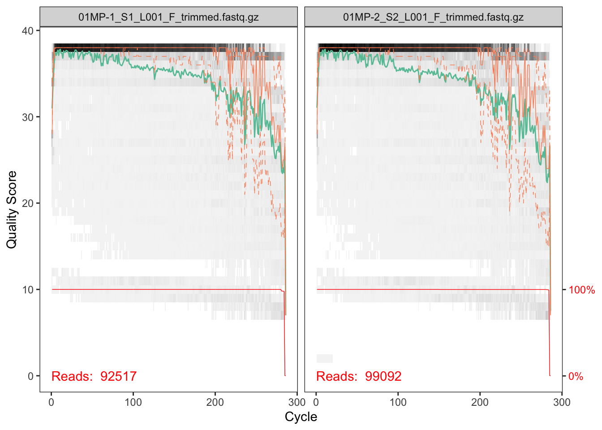
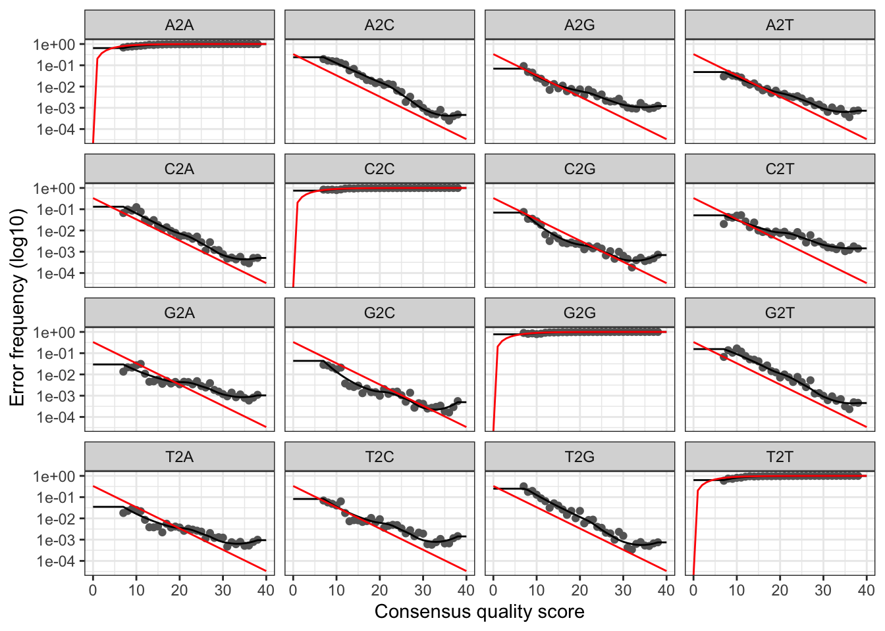

4 Filter
4.1 Inspect
We begin by inspecting the quality profiles:
plotQualityProfile(ftrim[1:2])
In gray-scale is a heat map of the frequency of each quality score at each base position. The mean quality score at each position is shown by the green line, and the quartiles of the quality score distribution by the orange lines. The red line shows the scaled proportion of reads that extend to at least that position (this is more useful for other sequencing technologies, as Illumina reads are typically all the same length, hence the flat red line).
The forward reads are good quality. We generally advise trimming the last few nucleotides to avoid less well-controlled errors that can arise there. These quality profiles do not suggest that any additional trimming is needed. We will truncate the forward reads at position 240 (trimming the last 10 nucleotides).
Now we visualize the quality profile of the reverse reads:
plotQualityProfile(rtrim[1:2])
The reverse reads are of significantly worse quality, especially at the end, which is common in Illumina sequencing. This isn’t too worrisome, as DADA2 incorporates quality information into its error model which makes the algorithm robust to lower quality sequence, but trimming as the average qualities crash will improve the algorithm’s sensitivity to rare sequence variants. Based on these profiles, we will truncate the reverse reads at position 160 where the quality distribution crashes.
IMPORTANT Your reads must still overlap after truncation in order to merge them later!
4.2 Filter and Trim
Assign the filenames for the filtered files:
ffilt <- file.path(path, "filtered", paste0(basename(sample.names), "_F_filtered.fastq.gz"))
rfilt <- file.path(path, "filtered", paste0(basename(sample.names), "_R_filtered.fastq.gz"))We’ll use standard filtering parameters: maxN=0 (DADA2 requires no Ns), truncQ=2, rm.phix=TRUE and maxEE=2. The maxEE parameter sets the maximum number of “expected errors” allowed in a read, which is a better filter than simply averaging quality scores.
out <- filterAndTrim(ftrim, ffilt, rtrim, rfilt,
truncLen=c(260,220),
maxN=0,
maxEE=c(2,2),
truncQ=2,
rm.phix=TRUE,
compress=TRUE,
multithread=TRUE,
matchIDs=TRUE) # On Windows set multithread=FALSE
head(out)## reads.in reads.out
## 01MP-1_S1_L001_F_trimmed.fastq.gz 92517 66965
## 01MP-2_S2_L001_F_trimmed.fastq.gz 99092 68750
## 01MP-3_S3_L001_F_trimmed.fastq.gz 95994 68855
## 03KW-1_S4_L001_F_trimmed.fastq.gz 111386 80588
## 03KW-2_S5_L001_F_trimmed.fastq.gz 82113 61147
## 03KW-3_S6_L001_F_trimmed.fastq.gz 123229 88500## Save output
path <- "~/Desktop/microbiomeworkshop2022/results"
saveRDS(out, file.path(path, "filt_out.rds"))Considerations for your own data:
The filtering parameters are starting points, not set in stone.
If you want to speed up downstream computation, consider tightening maxEE.
If too few reads are passing the filter, consider relaxing maxEE, perhaps especially on the reverse reads (eg. maxEE=c(2,5)), and reducing the truncLen to remove low quality tails.
Remember though, when choosing truncLen for paired-end reads you must maintain overlap after truncation in order to merge them later.